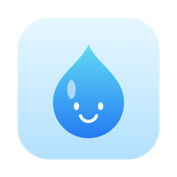
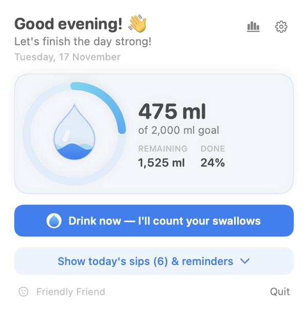

SipBuddy
A friendly water reminder that lives in the Mac menu bar. When it's time for a sip, the reminder covers every screen and only goes away once the camera actually sees you drinking: five swallows from a bottle or cup, counted on the Mac with Apple's Vision framework. Each swallow logs about 25 ml, so there is nothing to type.
Install: open the DMG and drag SipBuddy to Applications.
First launch: it isn't notarised, so right-click SipBuddy in Applications, choose Open, then Open again (or go to System Settings → Privacy & Security → Open Anyway). It asks for notification and camera permission.
- Menu bar only, no Dock icon. Runs quietly and starts at login.
- The full-screen reminder covers every connected monitor; the display with the camera shows the live camera view. It closes after 5 swallows, or with the ✕.
- On-device Vision: face, hand and body pose, bottle and cup recognition, and experimental throat-movement (optical flow) swallow counting.
- Learns your face once at first launch, so other people drinking in front of the camera don't count.
- Drink now: log water any time just by drinking in front of the camera.
- 70 conversational messages and 4 personalities: Friendly Friend, Funny Buddy, Motivational Coach and Minimal Assistant.
- Smart scheduling: interval, working days, lunch, sleep hours, stop at goal, and no pile-up of reminders after sleep.
- Statistics with Swift Charts: weekly and monthly charts, streak, month heatmap, CSV export. Light and dark mode, accent colours. Daily goal 2 L by default.
- Private: everything stays on the Mac. The camera runs only while a reminder is showing, and nothing is recorded.
In the menu bar
The popover opens under the drop icon and closes when you click anywhere else.

The popover

The menu bar app, captured from the real build. Today's sips can be edited or deleted, and the footer shows the chosen personality. Statistics and Settings open from the two icons at the top right.
Built with Swift, SwiftUI, AppKit, Vision, AVFoundation, UserNotifications, Swift Charts and ServiceManagement. History is stored locally on your Mac. SipBuddy is a friendly reminder, not medical advice. Source on GitHub ↗.